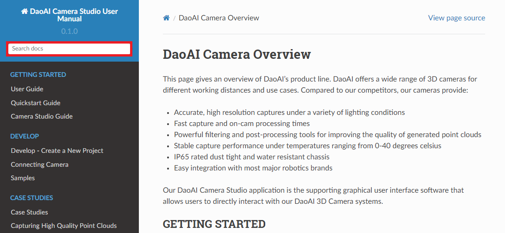
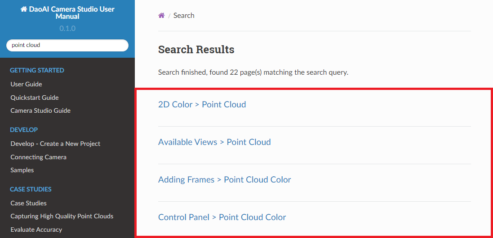
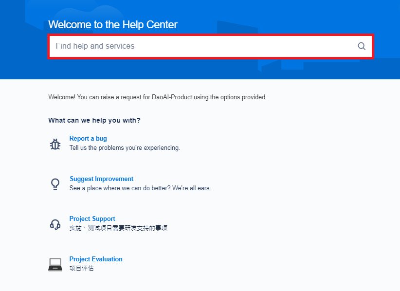
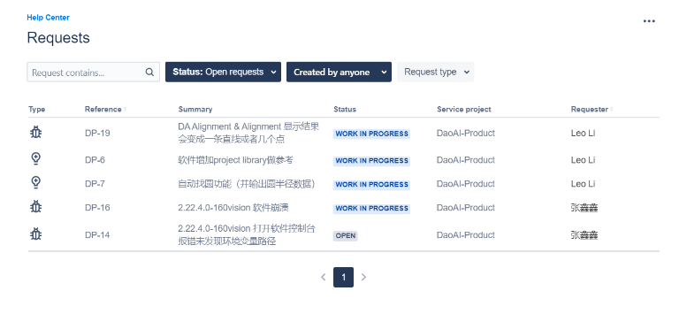
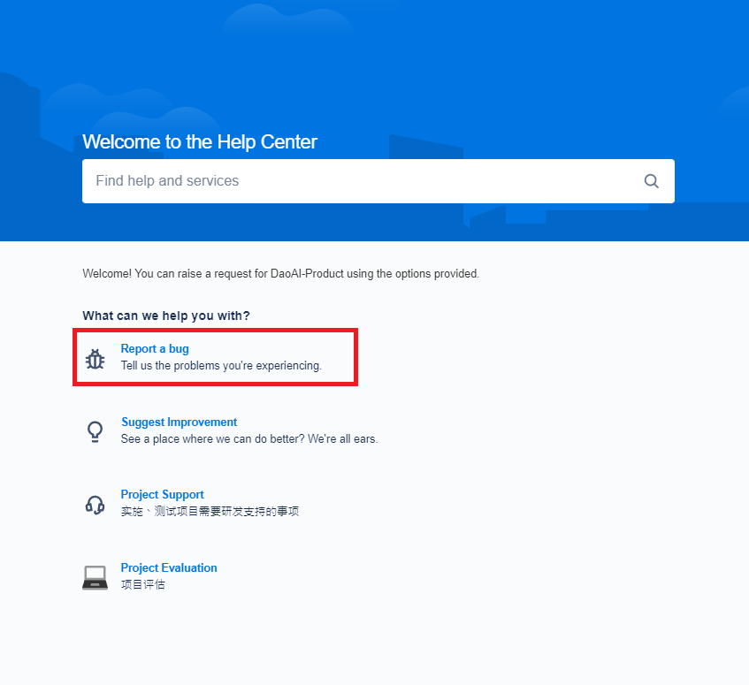
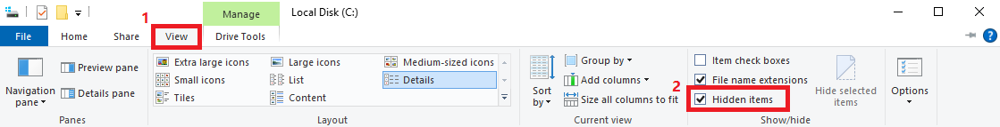
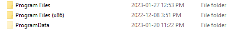

错误报告
如果你的问题没有在用户手册中解决，也没有在我们的FAQ页面上列出，你可以在我们的 帮助中心 报告你的问题。
你也可以通过 support@daoai.com 与我们联系，我们的团队会尽快给你答复!
搜索相关文章
你可以在位于左上方的搜索栏中输入关键词，寻找与你的主题相关的文章。
例如，我们搜索了关键词 “point cloud”，结果中列出了所有与点云有关的文章。
搜索相关的错误报告
你可以搜索关键词，或者调整过滤器，看看是否有类似的问题被报告或解决。
报告一个错误
要报告一个错误，请到 帮助中心 并点击 “报告一个错误”。
你将被引导到报告错误的页面。
请尽可能多地填写信息（如软件版本），以便我们能尽快解决这个问题。
要检查你的软件版本。
找到顶部菜单栏→选择 “帮助”→选择 “关于DaoAI Studio”。
你可以在DaoAI Studio的标志下找到软件版本。
本例中，软件版本为2.22.10.0_103。
如果你遇到了崩溃，请在报告中附上dmp文件。
您可以通过 C:\ProgramData\DaoAI\Camera Studio\Crashpad\db\reports 这个路径找到dmp文件。
如果你不能看到ProgramData文件夹，你可能要改变视图设置。
 下面是一些其他的信息，如果能在描述部分中出现就更好了。
重现该问题的步骤
软件版本，工作环境
你的名字
联系电子邮件地址和电话号码（以便我们能向您报告最新的错误信息）